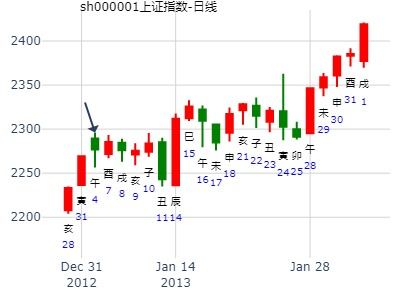
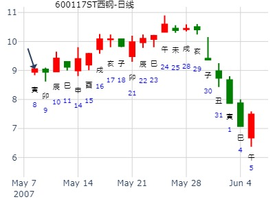
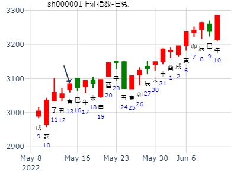
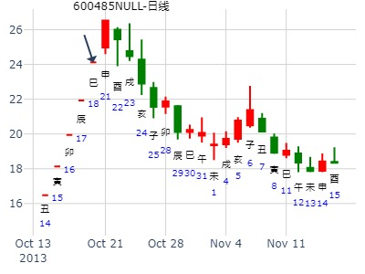

姓名： 出生年:1981 性别：男
占事：预测上证指数2013年01月份走势（公历）
起卦方式：手动摇卦
公历时间：2013年1月2日21时20分
干 支：壬辰年 壬子月 戊辰日 癸亥时
旬 空：午未 寅卯 (戌亥) 子丑
神 煞：驿马─寅 桃花─酉 日禄─巳 贵人─丑，未
震宫：地风升 巽宫：巽为风（六冲）
六神 伏 神 【本 卦】 【变 卦】
朱雀 ▄▄ ▄▄ 官鬼癸酉金 X-> ▄▄▄▄▄ 兄弟辛卯木 世
青龙 ▄▄ ▄▄ 父母癸亥水 X-> ▄▄▄▄▄ 子孙辛巳火
玄武 子孙庚午火 ▄▄ ▄▄ 妻财癸丑土 世 ▄▄ ▄▄ 妻财辛未土
白虎 ▄▄▄▄▄ 官鬼辛酉金 ▄▄▄▄▄ 官鬼辛酉金 应
螣蛇 兄弟庚寅木 ▄▄▄▄▄ 父母辛亥水 ▄▄▄▄▄ 父母辛亥水
勾陈 ▄▄ ▄▄ 妻财辛丑土 应 ▄▄ ▄▄ 妻财辛丑土
此卦地风升，总体趋势为上涨之象，财爻丑土持世，月建合之，得日辰之帮扶；卦变六冲，走势波动极大，人气聚散无常。卦中官动化兄，父动化子，预示月初大盘将有大幅杀跌动作，月中拉升，月底回调走势。
具体表现是1月7日酉日开始杀跌行情至11日丑日止跌，14号开始向上拉升到23日止，24日到31日又转入调整。

主帖标题: [讨论]
最好自己出套卦，这样别人才能给你看。这次好在我有卦。贴上一个：
主题：西宁特钢[600117]下周涨跌走势？
丁亥 乙巳 庚子 庚辰 (辰巳空) 丁亥年三月廿十(2007/05/06 07:50:23)
时间: 2007-05-06
干支: 丁亥年乙巳月庚子日 (旬空: 辰巳 )
地风升 巽为风
六神 伏神 本 卦 变 卦
腾蛇 ▅▅ ▅▅ 官鬼酉金 Ｘ→ ▅▅▅▅▅ 兄弟卯木 世
勾陈 ▅▅ ▅▅ 父母亥水 Ｘ→ ▅▅▅▅▅ 子孙巳火
朱雀 子孙午火▅▅ ▅▅ 妻财丑土 世 ▅▅ ▅▅ 妻财未土
青龙 ▅▅▅▅▅ 官鬼酉金 ▅▅▅▅▅ 官鬼酉金 应
玄武 兄弟寅木▅▅▅▅▅ 父母亥水 ▅▅▅▅▅ 父母亥水
白虎 ▅▅ ▅▅ 妻财丑土 应 ▅▅ ▅▅ 妻财丑土
元亨，用见大人，勿恤，南征吉。
初六：允升，大吉。
九二：孚乃利用禴，无咎。
九三：升虚邑。
六四：王用亨于岐山，吉无咎。
六五：贞吉，升阶。
上六：冥升，利于不息之贞。
彖︰柔以时升，巽而顺，刚中而应，是以大亨；用见大人，勿恤，
有庆也；南征吉，志行也。

主帖标题: 5月16日至5月20日大盘预测
公历时间：2022年5月13日16时44分 农历时间：壬寅年 四月十三日申时
干 支：壬寅年 乙巳月 丙寅日 丙申时
旬 空：辰巳 寅卯 戌亥 辰巳
神 煞：驿马─申 桃花─卯 日禄─巳 贵人─酉，亥
中国预测网纳甲六爻排盘
震宫：地风升 巽宫：巽为风（六冲）
六神 伏 神 【本 卦】 【变 卦】
青龙 ▄▄ ▄▄ 官鬼癸酉金 × ▄▄▄▄▄ 兄弟辛卯木 世
玄武 ▄▄ ▄▄ 父母癸亥水 × ▄▄▄▄▄ 子孙辛巳火
白虎 子孙庚午火 ▄▄ ▄▄ 妻财癸丑土 世 ▄▄ ▄▄ 妻财辛未土
螣蛇 ▄▄▄▄▄ 官鬼辛酉金 ▄▄▄▄▄ 官鬼辛酉金 应
勾陈 兄弟庚寅木 ▄▄▄▄▄ 父母辛亥水 ▄▄▄▄▄ 父母辛亥水
朱雀 ▄▄ ▄▄ 妻财辛丑土 应 ▄▄ ▄▄ 妻财辛丑土
周涨，一二跌，三四五涨，，，，跌，跌，涨，涨，涨，，，，，周涨

性别：男
占事:600485下周
起卦方式：手动摇卦
公历时间：2013年10月18日18时16分
干 支：癸巳年 壬戌月 丁巳日 己酉时
旬 空：午未 子丑 子丑 寅卯
神 煞：驿马─亥 桃花─午 日禄─午 贵人─酉，亥
震宫：地风升 巽宫：巽为风（六冲）
六神 伏 神 【本 卦】 【变 卦】
青龙 ▄▄ ▄▄ 官鬼癸酉金 X-> ▄▄▄▄▄ 兄弟辛卯木 世
玄武 ▄▄ ▄▄ 父母癸亥水 X-> ▄▄▄▄▄ 子孙辛巳火
白虎 子孙庚午火 ▄▄ ▄▄ 妻财癸丑土 世 ▄▄ ▄▄ 妻财辛未土
螣蛇 ▄▄▄▄▄ 官鬼辛酉金 ▄▄▄▄▄ 官鬼辛酉金 应
勾陈 兄弟庚寅木 ▄▄▄▄▄ 父母辛亥水 ▄▄▄▄▄ 父母辛亥水
朱雀 ▄▄ ▄▄ 妻财辛丑土 应 ▄▄ ▄▄ 妻财辛丑土
